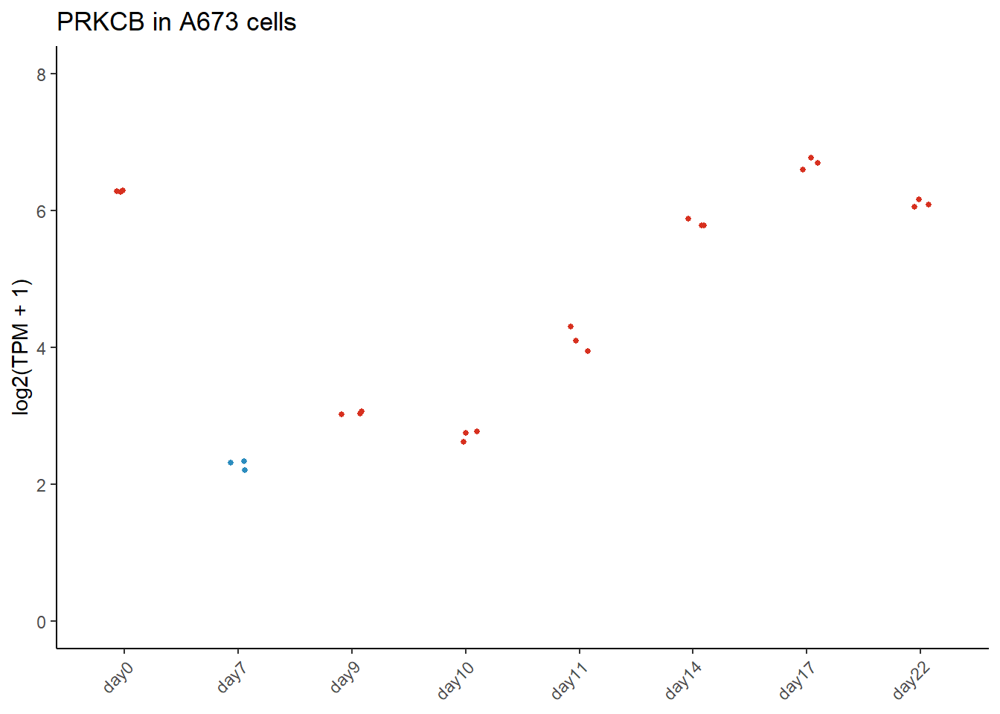
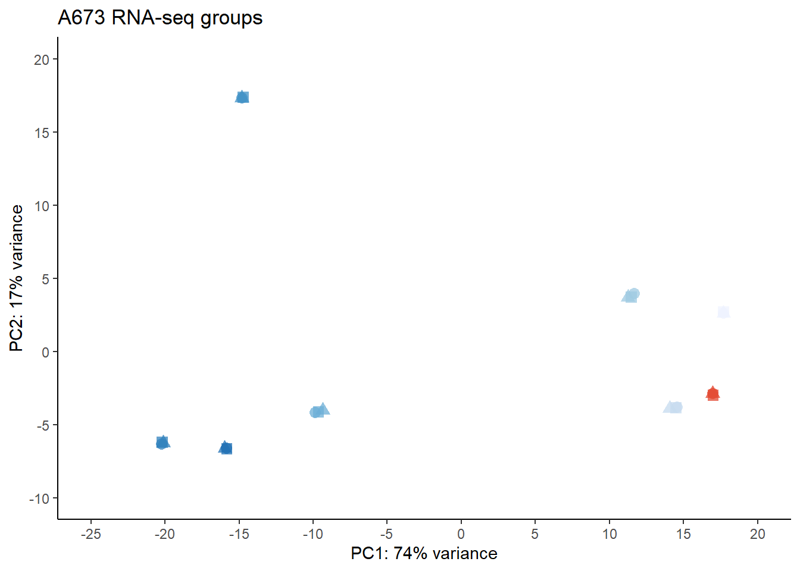

##########################################################################################
library('tidyverse')
library('ggplot2')
library('RColorBrewer')
library('tximport')
library('GenomicFeatures')
library('DESeq2')
library('ggrepel')
library('org.Hs.eg.db')Sorensen RNA-seq data processing
Details
This document describes processing of RNA-seq data derived from a timecourse of doxycycline treatment for A673 cells expressing an inducible shRNA against EWS-FLI1. The data have been processed to quantification as described elsewhere in these documents.
Setting up the environment
These are packages you will need for this notebook. For exact versions used, please refer to the session info at the bottom of this notebook.
I want to set a base directory that we can use as a link to the directory where we will do most of the work. I use two directories here because the Workspace is what is pushed to GitHub and contains scripts and plot files, but the Repository is where more of the big data is stored that does not get pushed.
##########################################################################################
generalDatasets = 'C:/Users/chughes/Documents/bccrc/projectsRepository/generalDatasets'
baseWorkspace = 'C:/Users/chughes/Documents/bccrc/projectsWorkspace/sorensenLab/relatedToEwsCrisprManuscript'
baseRepository = 'C:/Users/chughes/Documents/bccrc/projectsRepository/sorensenLab/relatedToEwsCrisprManuscript'Data processing
The first thing to do is to make a sample annotation table. We have an annotation table that we made in excel. The code below will get the file paths for the quant files, read in our transcriptome gtf, and using tximport to read in the entire dataset.
##########################################################################################
#read a table containing the sample information for our RNAseq runs
samples = read_tsv(paste(baseRepository, '/defineCandidatesExpressionData/sorensenEwsA673RnaSeq/sampleInfo.txt', sep = ''), show_col_types = FALSE) %>%
dplyr::mutate(accession = paste(sampleName,'_',batch, sep = '')) %>%
dplyr::select(accession, sampleName:batch)
samples# A tibble: 24 × 7
accession sampleName cell treatment barcode experiment batch
<chr> <chr> <chr> <chr> <chr> <chr> <chr>
1 day0_setA day0 a673shEwsFli1 none ATCACG PX1955 setA
2 day0_setB day0 a673shEwsFli1 none ATCACG PX1956 setB
3 day0_setC day0 a673shEwsFli1 none ATCACG PX1957 setC
4 day7_setA day7 a673shEwsFli1 none CGATGT PX1955 setA
5 day7_setB day7 a673shEwsFli1 none CGATGT PX1956 setB
6 day7_setC day7 a673shEwsFli1 none CGATGT PX1957 setC
7 day9_setA day9 a673shEwsFli1 none TTAGGC PX1955 setA
8 day9_setB day9 a673shEwsFli1 none TTAGGC PX1956 setB
9 day9_setC day9 a673shEwsFli1 none TTAGGC PX1957 setC
10 day10_setA day10 a673shEwsFli1 none TGACCA PX1955 setA
# … with 14 more rows#use the sample info to build a file list
files = file.path(baseRepository, 'defineCandidatesExpressionData/sorensenEwsA673RnaSeq', 'quants', paste(samples$barcode, '_', samples$batch, sep = ''), 'quant.sf')
all(file.exists(files))[1] TRUE##build the transcriptome index...this is based on the same gtf we used in the alignment process
txdb = makeTxDbFromGFF('D:/databases/projectEwsDlg2/baseGenomeFiles/genome.gtf')Import genomic features from the file as a GRanges object ... OK
Prepare the 'metadata' data frame ... OK
Make the TxDb object ... Warning in .get_cds_IDX(mcols0$type, mcols0$phase): The "phase" metadata column contains non-NA values for features of type
stop_codon. This information was ignored.OKk = keys(txdb, keytype = "TXNAME")
tx2gene = select(txdb, k, c("GENEID", "TXSTART", "TXEND"), "TXNAME")'select()' returned 1:1 mapping between keys and columns##read the transcriptome data processed from salmon
txi = tximport(files, type = 'salmon', tx2gene = tx2gene)reading in files with read_tsv
1 2 3 4 5 6 7 8 9 10 11 12 13 14 15 16 17 18 19 20 21 22 23 24
summarizing abundance
summarizing counts
summarizing lengthtxiAnnotated = tibble(as.data.frame(txi$abundance)) %>%
mutate('ENSEMBL' = sub('(.*)\\.[0-9]+$', '\\1', row.names(txi$abundance)))Take a quick look at these data for a couple of positive control genes to make sure it is as we expect for each sample.
##########################################################################################
##add in gene symbols
geneSymbols = select(org.Hs.eg.db, txiAnnotated$ENSEMBL, c('ENSEMBL','SYMBOL'), 'ENSEMBL') 'select()' returned 1:many mapping between keys and columnsgeneExpData = txiAnnotated %>%
left_join(geneSymbols) %>%
mutate(symbol = SYMBOL)Joining, by = "ENSEMBL"colnames(geneExpData)[1:24] = samples$accession
##extract the target gene from the data and set up the data frame for plotting
targetGenes = c('PRKCB')
targetData = geneExpData %>%
dplyr::filter(symbol %in% targetGenes) %>%
tidyr::pivot_longer(cols = day0_setA:day22_setC, names_to = 'accession', values_to = 'tpm') %>%
dplyr::select(symbol,accession,tpm) %>%
dplyr::mutate(tpm = log2(tpm + 1)) %>%
dplyr::left_join(samples) %>%
dplyr::mutate(sampleName = factor(sampleName, levels = c('day0','day7','day9','day10','day11','day14','day17','day22')))Joining, by = "accession"##set some colors for the plot
sampleColors = c(rep(brewer.pal(4,'OrRd')[4],1),
rep(brewer.pal(4,'GnBu')[4],1),
rep(brewer.pal(4,'OrRd')[4],6))
##create the plot
ggplot(targetData, aes(sampleName, tpm, color = sampleName)) +
geom_point(aes(x=sampleName, y=tpm), data = targetData, size = 1, position = position_jitter(w = 0.1, h = 0)) +
scale_color_manual(values = sampleColors) +
labs(y = 'log2(TPM + 1)', title = 'PRKCB in A673 cells') +
scale_y_continuous(limits = c(0,8), breaks = seq(0,16,2)) +
theme_classic() +
theme(legend.position = 'none',
axis.title.x=element_blank(),
axis.text.x = element_text(angle = 45, hjust = 1)
)
##save the plot in case we want it later
ggsave(paste(baseRepository, '/defineCandidatesExpressionData/sorensenEwsA673RnaSeq/plots/scatter_PRKCB_RnaExpressionLevels.pdf', sep = ''),
height = 2, width = 2, useDingbats = FALSE)This looks as we expect with PRKCB expression to be low in day 7 cells that lack EWS-FLI1 expression. The next thing we can do is to perform a differential expression analysis between the the different time points and see what comes out. We will do this using DESeq2. For filtering after DESeq2, I ended up choosing the condition that something had to be identified in all 3 replicates of day 0, or day 7. The reason I did this was because I wanted to focus purely on EWS-FLI1 regulated transcripts. There is some ‘noise’ in the data in the intermediate time points that could potentially stem from things like split intervals and cell confluence, which granted, may be interesting, but is not my primary focus.
##########################################################################################
##re-extract the quantification data for a subset of the files
samplesOfInterest = c('day0','day7','day9','day10','day11','day14','day17','day22')
samplesForDe = samples %>%
dplyr::filter(sampleName %in% samplesOfInterest) %>%
dplyr::mutate(sampleName = factor(sampleName, levels = c('day0','day7','day9','day10','day11','day14','day17','day22')))
#
quantFilesForDe = file.path(paste(baseRepository, '/defineCandidatesExpressionData/sorensenEwsA673RnaSeq/quants', sep = ''), paste(samplesForDe$barcode, '_', samplesForDe$batch, sep = ''), 'quant.sf')
names(quantFilesForDe) = samplesForDe$accession
all(file.exists(quantFilesForDe))[1] TRUE#
txiForDe = tximport(quantFilesForDe, type = 'salmon', tx2gene = tx2gene)reading in files with read_tsv1 2 3 4 5 6 7 8 9 10 11 12 13 14 15 16 17 18 19 20 21 22 23 24
summarizing abundance
summarizing counts
summarizing length##perform the deseq analysis
ddsTxi = DESeqDataSetFromTximport(txiForDe,
colData = samplesForDe,
design = ~ sampleName)using counts and average transcript lengths from tximportdds = DESeq(ddsTxi)estimating size factors
using 'avgTxLength' from assays(dds), correcting for library size
estimating dispersions
gene-wise dispersion estimates
mean-dispersion relationship
final dispersion estimates
fitting model and testing##filter...you can change the criteria here...I opted to keep transcripts that were identified in either our day 0 or day 7 condition
##admittedly, this will miss bursts of transcripts that get turned on between
keep = (rowSums(counts(dds)[,1:3] >= 10) == 3) |
(rowSums(counts(dds)[,4:6] >= 10) == 3)
#(rowSums(counts(dds)[,7:9] >= 10) == 3) |
#(rowSums(counts(dds)[,10:12] >= 10) == 3) |
#(rowSums(counts(dds)[,13:15] >= 10) == 3) |
#(rowSums(counts(dds)[,16:18] >= 10) == 3) |
#(rowSums(counts(dds)[,19:21] >= 10) == 3) |
#(rowSums(counts(dds)[,22:24] >= 10) == 3)
dds = dds[keep,]Extract the DESeq data and plot for the different comparisons of interest.
##########################################################################################
#parse the deseq data - change the first two values to get different comparisons
toCompare = c('day0','day9','day10','day11','day14','day17','day22')
for (i in 1:length(toCompare)){
datasetFirst = toCompare[i]
datasetSecond = 'day7'
res = results(dds, contrast = c('sampleName', datasetFirst, datasetSecond))
ens.str = substr(rownames(res), 1, 15)
res$symbol = mapIds(org.Hs.eg.db,
keys=ens.str,
column="SYMBOL",
keytype="ENSEMBL",
multiVals="first")
resOrdered = res[order(res$pvalue),]
#save the data
saveRDS(as.data.frame(resOrdered),
paste(baseRepository, '/defineCandidatesExpressionData/sorensenEwsA673RnaSeq/datasetOutputs/dataset_deseq2_', datasetFirst, '-', datasetSecond, '.rds', sep = ''))
write.csv(as.data.frame(resOrdered),
file = paste(baseRepository, '/defineCandidatesExpressionData/sorensenEwsA673RnaSeq/datasetOutputs/dataset_deseq2_', datasetFirst, '-', datasetSecond, '.csv', sep = ''))
##########################################################################################
#assign colors based on fold change and p-values
rnaExp = as.data.frame(resOrdered)
rnaExp$logPValue = -log10(rnaExp$padj)
rnaExp$logPValueScaled = ifelse(rnaExp$logPValue > 300, 300, rnaExp$logPValue)
rnaExp$pColors = ifelse(rnaExp$padj <= 0.001 & rnaExp$log2FoldChange >= 1, brewer.pal(4,'OrRd')[4],
ifelse(rnaExp$padj <= 0.001 & rnaExp$log2FoldChange <= -1, brewer.pal(4,'GnBu')[4], brewer.pal(3,'Greys')[2]))
#assign text labels to specific genes of interest
targetGenes = c('IL1RAP','STEAP1','PRKCB','LOX')
rnaExp$pText = ifelse(rnaExp$symbol %in% targetGenes, rnaExp$symbol, '')
#create the plot and save it
ggplot(rnaExp, aes(log2FoldChange, logPValueScaled)) +
geom_point(size = 0.5, color = rnaExp$pColors) +
labs(x = paste('log2(',datasetFirst,' - ',datasetSecond,')', sep = ''), y = '-log10(Adjusted p-value)', title = paste(datasetFirst,' vs ',datasetSecond, sep='')) +
geom_text_repel(label = rnaExp$pText, nudge_x = 0, nudge_y = 0, max.overlaps = 55000, size = 2, segment.size = 0.25) +
scale_x_continuous(limits = c(-14,14), breaks = seq(-20,20,2)) +
scale_y_continuous(limits = c(0,300), breaks = seq(0,500,50)) +
geom_vline(xintercept = c(-1,1), linetype = 'dashed') +
geom_hline(yintercept = -log10(0.001), linetype = 'dashed') +
theme_classic()
ggsave(paste(baseRepository, '/defineCandidatesExpressionData/sorensenEwsA673RnaSeq/plots/scatter_deseq2_', datasetFirst, '-', datasetSecond, '.pdf', sep = ''),
height = 2, width = 2, useDingbats = FALSE)
}'select()' returned 1:many mapping between keys and columns
'select()' returned 1:many mapping between keys and columns
'select()' returned 1:many mapping between keys and columnsWarning: Removed 2 rows containing missing values (`geom_point()`).Warning: Removed 2 rows containing missing values (`geom_text_repel()`).'select()' returned 1:many mapping between keys and columns
'select()' returned 1:many mapping between keys and columns
'select()' returned 1:many mapping between keys and columns
'select()' returned 1:many mapping between keys and columnsCompare the different samples using a PCA using the differential expression data.
##########################################################################################
vsd = vst(dds, blind = FALSE) #variance stabilizing normalization of the data
#extract the data for the MDS analysis itself
mdsPlot = plotPCA(vsd, intgroup=c('sampleName','batch'), returnData = TRUE)
mdsPlot$sampleName = factor(mdsPlot$sampleName, levels = c('day0','day7','day9','day10','day11','day14','day17','day22'))
percentVar = round(100 * attr(mdsPlot, 'percentVar'))
#make the ggplot
ggplot(mdsPlot, aes(PC1, PC2, color = sampleName, shape = batch)) +
geom_point(size = 3, alpha = 0.75) +
#geom_text(label = mdsPlot$sampleName) +
scale_color_manual(values = rep(c(brewer.pal(3,'Blues')[3], brewer.pal(3,'OrRd')[3], brewer.pal(7,'Blues')[1:6]),3)) +
scale_x_continuous(limits = c(-25,20), breaks = seq(-30,30,5)) +
scale_y_continuous(limits = c(-10,20), breaks = seq(-20,20,5)) +
labs(x = paste0('PC1: ', percentVar[1], '% variance'),
y = paste0('PC2: ', percentVar[2], '% variance'),
title = 'A673 RNA-seq groups') +
theme_classic() +
theme(legend.position = 'none')
#save the plot
ggsave(paste(baseRepository, '/defineCandidatesExpressionData/sorensenEwsA673RnaSeq/plots/pcaplot_a673ShEwsFli1AbundanceVsn.pdf', sep = ''),
height = 2, width = 2, useDingbats = FALSE)
##if you want to look at the trancripts with the most dispersion in the DESeq data
x = counts(dds)[order(dispersions(dds), decreasing=TRUE)[1:1000],]I am primarily interested in upregulated transcripts here as these will be the ones we target in the CRISPR screen. So, we can filter our data down and combine them with the Sole data that we prepared before. We will keep transcripts from both sets and we will use other data to filter them down later on.
##########################################################################################
##read in the Sole data
sole = readRDS(paste(baseRepository, '/defineCandidatesExpressionData/soleInducedEwsRnaSeq/datasetOutputs/dataset_deseq2_candidates.rds', sep = ''))
##filter our own data focusing on the day 0 versus day 7 comparison
ews = tibble(readRDS(paste(baseRepository, '/defineCandidatesExpressionData/sorensenEwsA673RnaSeq/datasetOutputs/dataset_deseq2_day0-day7.rds', sep = ''))) %>%
dplyr::filter(padj <= 0.001 & !is.na(symbol)) %>%
dplyr::select(symbol, log2FoldChange) %>%
dplyr::rename(a673_log2FoldChangeRna = log2FoldChange) %>%
dplyr::full_join(sole)Joining, by = "symbol"##write this gene set to a file
saveRDS(ews, paste(baseRepository, '/defineCandidatesExpressionData/sorensenEwsA673RnaSeq/datasetOutputs/dataset_deseq2_candidatesPlusSole.rds', sep = ''))
write.table(ews, paste(baseRepository, '/defineCandidatesExpressionData/sorensenEwsA673RnaSeq/datasetOutputs/dataset_deseq2_candidatesPlusSole.tsv', sep = ''),
row.names = FALSE, col.names = TRUE, quote = FALSE, sep = '\t')Done with these data for now.
Session info
##########################################################################################
sessionInfo()R version 4.2.2 (2022-10-31 ucrt)
Platform: x86_64-w64-mingw32/x64 (64-bit)
Running under: Windows 10 x64 (build 19042)
Matrix products: default
locale:
[1] LC_COLLATE=English_Canada.utf8 LC_CTYPE=English_Canada.utf8
[3] LC_MONETARY=English_Canada.utf8 LC_NUMERIC=C
[5] LC_TIME=English_Canada.utf8
attached base packages:
[1] stats4 stats graphics grDevices utils datasets methods
[8] base
other attached packages:
[1] org.Hs.eg.db_3.16.0 ggrepel_0.9.2
[3] DESeq2_1.38.2 SummarizedExperiment_1.28.0
[5] MatrixGenerics_1.10.0 matrixStats_0.63.0
[7] GenomicFeatures_1.50.3 AnnotationDbi_1.60.0
[9] Biobase_2.58.0 GenomicRanges_1.50.2
[11] GenomeInfoDb_1.34.6 IRanges_2.32.0
[13] S4Vectors_0.36.1 BiocGenerics_0.44.0
[15] tximport_1.26.1 RColorBrewer_1.1-3
[17] forcats_0.5.2 stringr_1.5.0
[19] dplyr_1.0.10 purrr_1.0.0
[21] readr_2.1.3 tidyr_1.2.1
[23] tibble_3.1.8 ggplot2_3.4.0
[25] tidyverse_1.3.2
loaded via a namespace (and not attached):
[1] googledrive_2.0.0 colorspace_2.0-3 rjson_0.2.21
[4] ellipsis_0.3.2 XVector_0.38.0 fs_1.5.2
[7] rstudioapi_0.14 farver_2.1.1 bit64_4.0.5
[10] fansi_1.0.3 lubridate_1.9.0 xml2_1.3.3
[13] codetools_0.2-18 cachem_1.0.6 geneplotter_1.76.0
[16] knitr_1.41 jsonlite_1.8.4 Rsamtools_2.14.0
[19] annotate_1.76.0 broom_1.0.2 dbplyr_2.2.1
[22] png_0.1-8 compiler_4.2.2 httr_1.4.4
[25] backports_1.4.1 assertthat_0.2.1 Matrix_1.5-1
[28] fastmap_1.1.0 gargle_1.2.1 cli_3.5.0
[31] htmltools_0.5.4 prettyunits_1.1.1 tools_4.2.2
[34] gtable_0.3.1 glue_1.6.2 GenomeInfoDbData_1.2.9
[37] rappdirs_0.3.3 Rcpp_1.0.9 cellranger_1.1.0
[40] vctrs_0.5.1 Biostrings_2.66.0 rtracklayer_1.58.0
[43] xfun_0.36 rvest_1.0.3 timechange_0.1.1
[46] lifecycle_1.0.3 restfulr_0.0.15 XML_3.99-0.13
[49] googlesheets4_1.0.1 zlibbioc_1.44.0 scales_1.2.1
[52] vroom_1.6.0 ragg_1.2.4 hms_1.1.2
[55] parallel_4.2.2 yaml_2.3.6 curl_4.3.3
[58] memoise_2.0.1 biomaRt_2.54.0 stringi_1.7.8
[61] RSQLite_2.2.20 BiocIO_1.8.0 filelock_1.0.2
[64] BiocParallel_1.32.5 systemfonts_1.0.4 rlang_1.0.6
[67] pkgconfig_2.0.3 bitops_1.0-7 evaluate_0.19
[70] lattice_0.20-45 GenomicAlignments_1.34.0 htmlwidgets_1.6.1
[73] bit_4.0.5 tidyselect_1.2.0 magrittr_2.0.3
[76] R6_2.5.1 generics_0.1.3 DelayedArray_0.23.2
[79] DBI_1.1.3 pillar_1.8.1 haven_2.5.1
[82] withr_2.5.0 KEGGREST_1.38.0 RCurl_1.98-1.9
[85] modelr_0.1.10 crayon_1.5.2 utf8_1.2.2
[88] BiocFileCache_2.6.0 tzdb_0.3.0 rmarkdown_2.19
[91] progress_1.2.2 locfit_1.5-9.7 grid_4.2.2
[94] readxl_1.4.1 blob_1.2.3 reprex_2.0.2
[97] digest_0.6.31 xtable_1.8-4 textshaping_0.3.6
[100] munsell_0.5.0